Japan / Hokkaido / Kitahiroshima
Kitahiroshima
Kitahiroshima · Hokkaido
Kitahiroshima
Highlighted on the Hokkaido map.
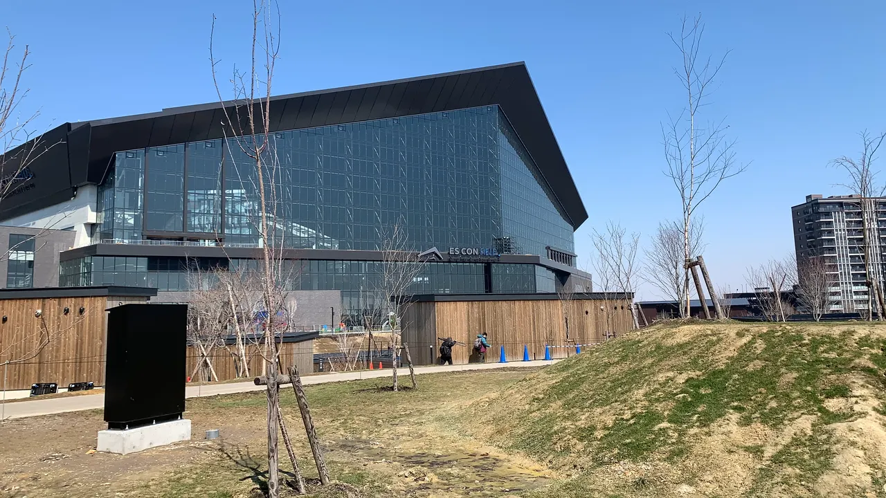
Stay
KITAHIROSHIMA NEVER END LEO
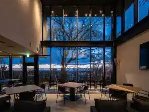
Kitahiroshima Never End Leo
VILLA BRAMARE
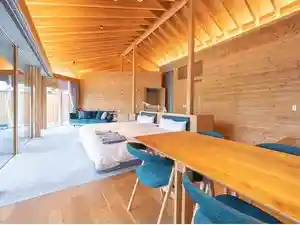
Villa Bramare
ＢＡＬＬＰＡＲＫ ＴＡＫＩＢＩ ＴＥＲＲＡＣＥ ＡＬＬＰＡＲ
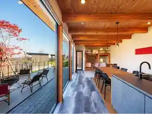
B A L L P A R K T A K I B I T E R R A C E A L L P A R
tower eleven hotel
Tower Eleven Hotel
札幌北広島クラッセホテル
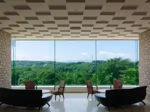
Sapporo Kita Hiroshima Kurassehoteru
Dining
BAZAAR
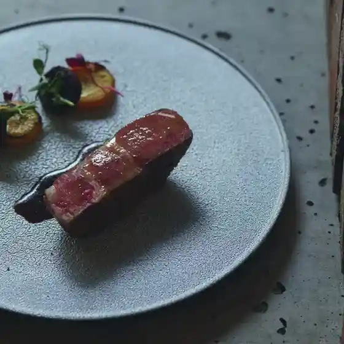
Bazaar
神戸元町ドリア 三井アウトレットパーク札幌北広島店
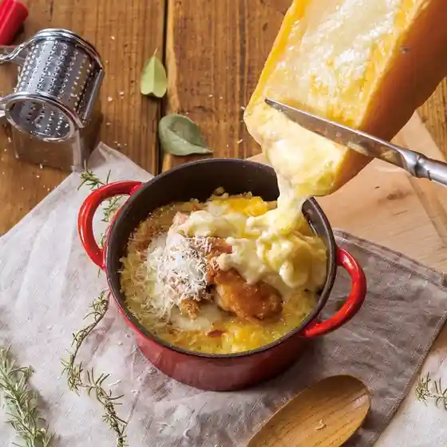
Koube Motomachi Doria Mitsui Autorettopaaku Sapporo Kita Hiroshima Mise
炭火居酒屋 炎 北広島店
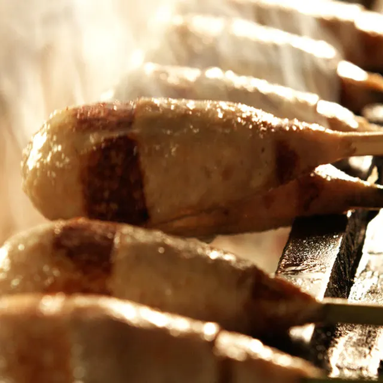
Sumibi Izakaya Honoo Kita Hiroshima Mise
アンティーカ ピッツェリア ダ ミケーレ 北海道
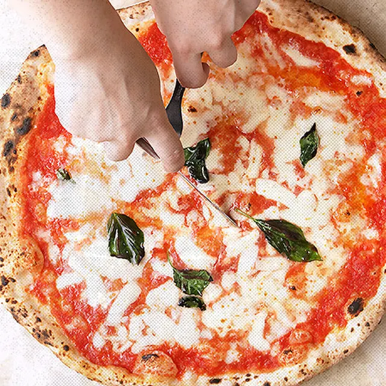
Anteiika Pittsueria Da Mikeere Hokkaidou
ジンギスカン邸 ラム王 北広島店
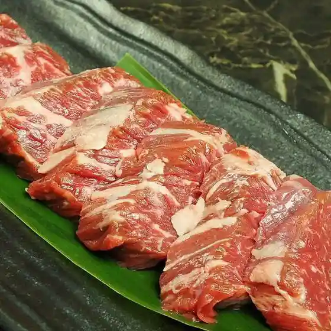
Jingisukan Tei Ramu Ou Kita Hiroshima Mise
レストランmog
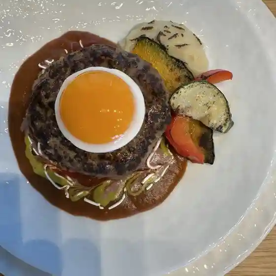
Resutoran Mog
アルトラーチェ
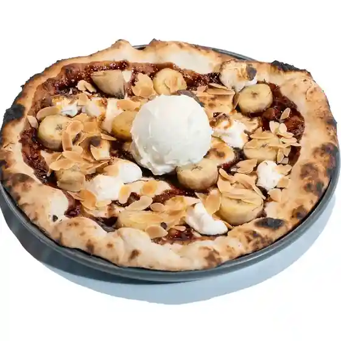
Arutoraache
酒とめし ことり
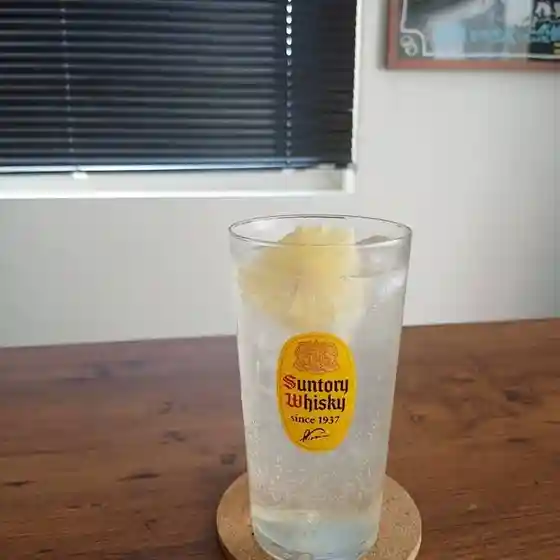
Sake Tomeshi Kotori
ファイターズ ダイニング ロスター
Faitaazu Dainingu Rosutaa
ラーメン山岡家 北広島店
Raamen Yamaoka Ie Kita Hiroshima Mise
ゴールド札幌カントリークラブ
Goorudo Sapporo Kantoriikurabu
ベーカリー SomeL
Beekarii Somel
いつき
Itsuki
Full Swing
Full Swing
ふるさと来LOVE
Furusato Rai Love
ピザテンフォー 北広島店
Pizatenfoo Kita Hiroshima Mise
レフボン 北広島店
Refubon Kita Hiroshima Mise
モン ボン カフェ
Mon Bon Kafe
祐一郎商店 エスコンフィールドHOKKAIDO店
Yuuichirou Shouten Esukonfiirudo Hokkaido Mise
大厚岸 トナリエ北広島店
Dai Akkeshi Tonarie Kita Hiroshima Mise
ニーウン・ペツ ガラス美術研究所
Niiun Petsu Garasu Bijutsu Kenkyuusho
スモークカフェ燻
Sumookukafe Kun
ファイターズローソン 北広島美沢五丁目店
Faitaazurooson Kita Hiroshima Misawa Go Choume Mise
Petit ZIKKA トナリエ北広島店
Petit Zikka Tonarie Kita Hiroshima Mise